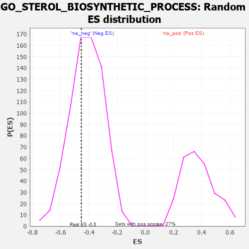

| | | Dataset | 7d |
| Phenotype | NoPhenotypeAvailable |
| Upregulated in class | na_neg |
| GeneSet | GO_STEROL_BIOSYNTHETIC_PROCESS |
| Enrichment Score (ES) | -0.45376396 |
| Normalized Enrichment Score (NES) | -1.0918275 |
| Nominal p-value | 0.37107778 |
| FDR q-value | 0.7596452 |
| FWER p-Value | 1.0 |
Table: GSEA Results Summary
 Fig 1: Enrichment plot: GO_STEROL_BIOSYNTHETIC_PROCESS
Fig 1: Enrichment plot: GO_STEROL_BIOSYNTHETIC_PROCESS
Profile of the Running ES Score & Positions of GeneSet Members on the Rank Ordered List
| PROBE | GENE SYMBOL | GENE_TITLE | RANK IN GENE LIST | RANK METRIC SCORE | RUNNING ES | CORE ENRICHMENT | | 1 | IDI1 | | | 1513 | 0.389 | -0.1364 | No |
| 2 | NFYB | | | 1543 | 0.384 | -0.0869 | No |
| 3 | NFYC | | | 1582 | 0.377 | -0.0394 | No |
| 4 | LBR | | | 2395 | 0.246 | -0.1074 | No |
| 5 | ARV1 | | | 2827 | 0.179 | -0.1368 | No |
| 6 | ACLY | | | 3149 | 0.130 | -0.1591 | No |
| 7 | CNBP | | | 3728 | 0.037 | -0.2266 | No |
| 8 | NFYA | | | 4140 | -0.031 | -0.2740 | No |
| 9 | RAN | | | 4299 | -0.059 | -0.2856 | No |
| 10 | G6PD | | | 5638 | -0.358 | -0.4043 | Yes |
| 11 | ABCG1 | | | 5778 | -0.399 | -0.3666 | Yes |
| 12 | PMVK | | | 5792 | -0.403 | -0.3124 | Yes |
| 13 | PLPP6 | | | 5842 | -0.416 | -0.2609 | Yes |
| 14 | SCAP | | | 5986 | -0.466 | -0.2145 | Yes |
| 15 | CFTR | | | 7143 | -1.030 | -0.2173 | Yes |
| 16 | SP1 | | | 7840 | -2.321 | 0.0165 | Yes |
Table: GSEA details [plain text format]

Fig 2: GO_STEROL_BIOSYNTHETIC_PROCESS: Random ES distribution
Gene set null distribution of ES for GO_STEROL_BIOSYNTHETIC_PROCESS